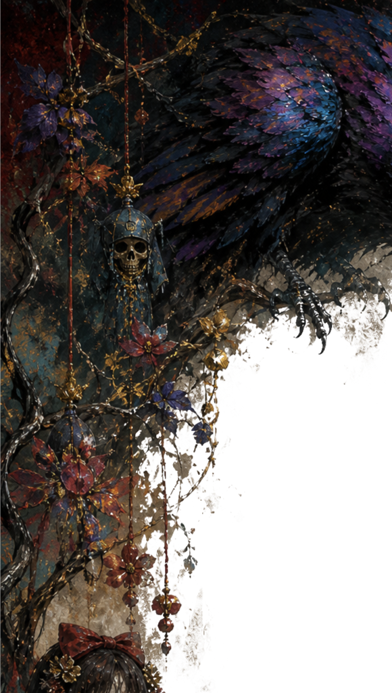
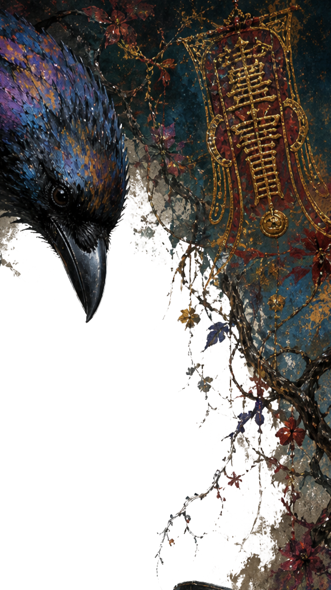
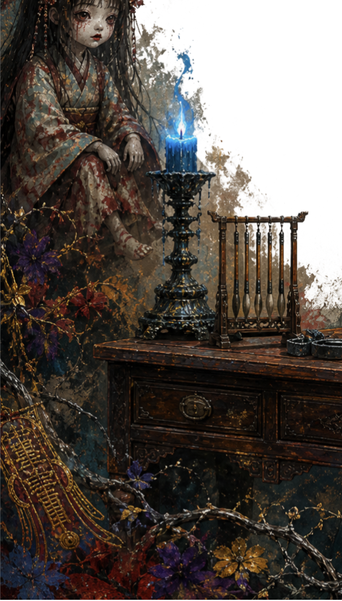

从这里进入故事本身
视觉小说项目拥有独立的目录与页面，每个项目包含简介、角色、章节与试玩入口。目前以「终电后」为第一个项目。
进入目录 →



你好，我是円森 綾夕（Madokamori Ayayu）。中文创作者，长期深耕悬疑与恐怖题材，偏好将地域民俗、传统鬼怪埋进现代日常，追求「渗入式阴森」而非跳吓。
此站收录世界观设定、短篇作品与正在筹备的视觉小说。作品面向读者公开，也欢迎编辑与出版方联系。
巨构建筑组成的异世界，文化从未断层，名称来源不可考。以旅行日记形式记录这个走不完的世界。
特摄与宇宙尺度高维存在融合的原创世界观，正在规划百万字长篇。关于一个不需要被保护的世界。
摆旧货摊的无业游民，捡了一个顶灾红包，从此入局。中式恐怖为主，事件感优先。
九集剧本。深夜电车末班之后，某个不该存在的车站「水無月駅」。规则怪谈与视线恐怖。
以太仓麻将民俗为背景的悬疑短篇。牌桌上翻开的，未必是牌。
校园鬼怪叙事。宿舍楼里那间总晾不干的屋子，有人在等你回来收衣服。
合作、约稿、交流，都可以在这里找到我。